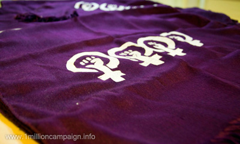
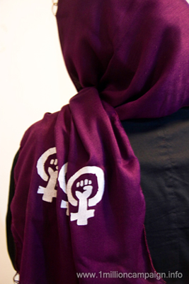

|
|
نمادی دیگر برای اعتراض
دو شنبه24 خرداد 1389
فعالان کمپین یک میلیون امضا در طول نزدیک به چهار سال فعالیت، همواره تلاش کرده اند تا با استفاده از ابزارهای مختلف، پیام برابری خواهانه خود را به گوش جامعه برسانند. آنان علاوه بر حضور در کوچه و خیابان های شهرها و گفتگوی چهره به چهره با مردم از نمادهای مختلفی برای نشان دادن اعتراض خود به تبعیضات قانونی علیه زنان استفاده می کنند. از جمله این نمادها می توان به چسباندن استیکرهای مربوط به حقوق زنان در شهر، پخش دستبندهای بنفش بین مردم، پخش بروشورهای آگاهی بخش درباره حقوق زنان و همچنین تولید کارهای هنری (چاپ تی شرت، دستبندهای نمادین چرمی و ...) اشاره کرد. استفاده از این نمادها علاوه بر ایجاد همبستگی بین فعالان کمپین و مردم، راهی برای نشان دادن اعتراض و مرئی کردن زنان و خواسته هایشان در شهر است؛ جایی که همواره زنان در آن سرکوب شده اند.

این بار و به مناسبت 22 خرداد، سالروز همبستگی جنبش زنان ایران، جمعی از فعالان کمپین یک میلیون امضا، در حرکتی جدید، از روسری های سفید و بنفش برای رساندن پیغام برابری خواهانه خود استفاده کرده و با چاپ نقش هایی بر روی آن، روسری ها را به نمادی برای اعتراض تبدیل کرده اند.
بحث پوشش و حجاب زنان در ایران، سابقه ای طولانی دارد. چنانچه می توان در صد سال گذشته رویکردهای متفاوتی را در این زمینه مشاهده کرد. در دوره قاجار زنان با چادر و پوشیه در مکان های شهری حضور می یافتند، به طوری که قابل شناسایی از یکدیگر نبودند و در دوره رضاشاه با قانون کشف حجاب اجباری، به یکباره زنان پوشیده در چادر مجبور به برداشتن حجاب در مکان های عمومی می شدند و سبک غربی پوشش برای مردان و زنان، ایده آل محسوب می شد. در زمان محمدرضا شاه زنان به خصوص در کلانشهرها از آزادی نسبی در انتخاب پوشش خود برخوردار بودند اما پس از انقلاب سال 57 زنان مجددا مجبور به داشتن حجاب در فضاهای عمومی شدند. هرچند این پوشش اجباری با توجه به محل و شرایط جغرافیایی شهرهای مختلف و فرهنگ و سنت موجود در این مناطق تفاوت هایی با هم دارد. با این وجود، قانونی که امروزه در مورد پوشش زنان در همه جای ایران حاکم است، پوشاندن موی سر و تمام بدن در فضاهای عمومی است. وجه مشترک همه این دوره های تاریخی، دید مردانه ای است که در مورد حجاب و پوشش زنان تصمیم گرفته و برای آن قانون وضع می کند، به طوری که زنان از یکی از ابتدایی ترین حقوق خود محروم شده اند و هیچگاه نتوانسته اند با انتخاب شخصی خود پوشش شان را برگزینند.

روسری، یکی از پوشش های غالب زنان در ایران است و از این رو برخی از فعالان کمپین یک امضا، تصمیم گرفتند تا آن را به نشانه ای برای اعتراض به تبعیضات حقوقی و قانونی علیه زنان تبدیل کنند. از آنجایی که اغلب زنان و دختران شهر از روسری به عنوان حجاب استفاده می کنند و این پوشش در مکان های عمومی قابل مشاهده است، فعالان کمپین با چاپ نقش هایی بر روسری های سفید و بنفش، از آن برای نشان دادن حضور خود و رساندن صدایشان به گوش جامعه استفاده کردند. این عمل نه فقط اعتراض به تبعیض است، بلکه اعتراض به تمامی اجبارهایی است که در این سال ها با استفاده از یکسان سازی کدهای رفتاری و نشانه ای زنها، سعی در نامرئی کردن آنان در فضاهای عمومی کرده است.